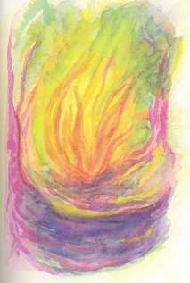

A salamander, besides being an interesting amphibious creature, in Spanish – at least in Argentine Spanish – is a squat, cast-iron, wood-burning stove used for heating, called a salamandra. Not much more to say about this primitive stove…now, so let’s start with the creature. What I learned about salamanders was that it is an amphibian of the order urodela which was often in olden times credited with fantastic and sometimes occult qualities such as an affinity with elemental fire, as in the allegorical descriptions of animals in medieval bestiaries.
***
Now back to the stove. When we moved to the western sierras of Argentina, far from the confines of Buenos Aires, I converted a galpón, a kind of large shed mostly used for tools and storage, into an office about 50 meters from the main house. “Converted” is perhaps an exaggeration, for all I really did was paint it, disinfect it, install ceiling insulation and an air conditioning unit. A salamander was already there, not pretty perhaps, but so what, I was there to work and be reasonably warm in winter and reasonably cool in summer. By the way, in case you’re confused already, Argentina is not Mexico and it does get cold in winter; not what you who live in the northern hemisphere call cold, but one does need heating in winter. Air conditioning is not necessary here at 1,000 meters altitude, but in my galpón with its tin roof and ill-fitting windows inviting in the cold, it certainly is.
So when our first winter came I threw some newspaper and kindling wood into the salamander/salamandera and waited for it to live up to its reputation. It didn’t, kept going out, leaked smoke and left ashes that had to be cleaned out. In short, my opinion was that it no sirve para nada. Primitive stuff like this may enchant the natives, but this is the modern world. So I had a gas heater installed – despite gas being frightfully expensive – and an electric one – despite electricity being frightfully expensive.
And so the years flew by, not as comfortable as I would have liked to have been, but tolerably so.
One day a week ago, an friend who worked in construction, Nino, was at home to advise on enhanced heating for the main house, where we already have a fireplace, a gas heater and an electric one. There are new salmandras (what I’ll call them from now on) on the market now, much more efficient than the old ones (according to the publicity) and considerably more attractive. I asked him about the advisability of installing one in our large living-dining room. He advised against it for various reasons, including the price , about $1,500, then said that the old ones are much better, but both are a lot of work cleaning out every day. I said: but I have an old one in my galpón-office que no sirve para nada. What? he said, let’s have a look. So we walked over to the galpón where he gazed at the salamandra like an old friend. What’s the problem? Lots of smoke? Goes out all the time?
Sí.
Nino went outside and looked up at the iron pipe leading from the salamander up through the roof where a metal cap rested on its head. When’s the last time you cleaned that pipe? he asked me. Uhh… nunca, I replied. He laughed: Gotta clean it, hombre. That pipe probably has all kinds of junk in it not letting it breathe: smoke out, air in.
At that moment I remembered the dream I’d had the night before. You know, how sometimes you wake up and don’t remember a dream you had until later.
***
The dream: I wake up sweating, wondering why it’s so hot in winter. Then I see a bright red light at the foot of the bed. When I’m able to focus (no specs needed), here’s what I see:

Who..what…are you? I stammer.
Who…what…do I look like?
Fire. (Strangely enough, I felt no fear yet, only surprise.)
I…am… Sofía Salamandra!
Oh yeah?
Yeah, and if you don’t know who…or what…I am, I suggest you listen carefully. He, I mean she (“salamandra” is feminine in Spanish) puts on a glove – fire proof, I suppose, snaps her fingers and a charred-at-the-edges paper appears. She reads:
Salamanders may actively defend themselves once they are grasped by a predator. Besides various antipredator postures, S. salamandra adults are able to exude toxic skin secretions such as the neurotoxic alkaloid Samandarin. This alkaloid causes strong muscle and hypertension combined with hyperventilation in all vertebrates. The poison glands of the fire salamander are concentrated in certain areas of the body, especially around the head and the dorsal skin surface. The colored portions of the animal’s skin usually coincide with these glands. Compounds in the skin secretions may be effective against bacterial and fungal infections of the epidermis; some are potentially dangerous to human life. That’s from Wikipedia.
That, understandably, makes me nervous. I say, Do you mind if I open a window? It’s so hot in here.
Of course I mind, she crackles, it’s freezing here. Now just shut up.
Okay, but I’m not a predator for God’s sake.
And do not take the name of the Lord in vain.
Sorry.
She seems to grow, almost touching the bed. Hey, be careful, you’ll set the whole house on fire.
Too bad – but she diminishes a bit.
You have been treating me badly, don Frank (the honorific “don” being sarcastic). To me that is predation.
But how? I ask, I never saw you before.
Oh yes you did. Years ago you invoked me in your pot-bellied homonymous stove without sufficient air and with wet wood. You struck a match, one of my fingers, to a piece of newspaper and threw it in, and when someone does that I must react as best I can. I suffered greatly, choked, gasped for air on my own sweat, what you call smoke, until I finally died.
But..but, I say in my defense, you’re not dead, you’re here. And you go out all the time.
Of course I’m here, you fool! When I go out after having consumed healthy dry wood and am not asphyxiated by fools I go to sleep until I am invoked anew. Otherwise I die out, and you are the guilty predator.
But if you died out, I insist, only getting myself in deeper, how come you’re here?
I must reincarnate then, which is a lengthy and unpleasant process, especially when it’s for the benefit of idiots like you.
Oh, I say with as much humility as I can muster under the circumstances, I’m so sorry. I didn’t know.
Ignorance is no excuse under the laws of nature.
I open my mouth, but close it again. What can I say to that? After all, I’m no expert on the laws of nature.
Suddenly – Oh, the horror! – Sofía Salamandra transforms herself into her real, or other, self
and starts to crawl towards me. Stop! I cry. What can I do to make it up to you?
The amphibian stops its forward motion and transforms back to its fire-form.
Are you truly penitent? she asks.
Yes, yes, what can I do.
First of all, she says – mixing some blue into her color –, clean out the exhaust pipe from above and the stove from below, then use dry kindling and have some respect. Do you know why I’m giving you a second chance? I shook my head. Once you wrote a wonderful children’s story in which my brother rusty was treated with respect 1. There will be no third chance. I’ll be waiting in the nature-world.
And poof, she was gone.
***
Did you hear me, Frank, Nino said, you gotta clean it out. We came back into the galpón where Nino re-inspected the salamandra. (We’ll call it that from now on.) And you need a piece of mica to put here. He pointed at an oval-shaped window in its little door.
The next morning I called the lightest odd-jobs guy I knew to go up on the tin roof and attack the pipe-cleaning job. I worried that a heavier one might fall through the roof.
Sure, no problem, Mariano said. When’s the last time you cleaned it? When I told him nunca he said: Mierda, that’s probably before I was born.
He climbed up a ladder onto the roof and tip-toed to the head of the pipe with a broom-stick in his hand. I couldn’t bear to look, so I went to the house to watch the Mets game on Directv, hoping they’d end their losing streak. I figured it’d take a while to clean out that pipe anyway.
A half-hour later I heard Mariano calling me. I went back to the office-galpón. He opened the door of the salamandra, which was now full of empty wasp nests. That’s what was clogging the pipe, he said. They leave in the winter, but they’ll be back. They think this is a comfy home. You’ll need mica for the window.
Do you know where I can get some? I asked him.
Hmmm, maybe Ortíz in Villa Dolores. He’s the only one who’d have weird stuff like that.
Mica: “The mica group of sheet silicate (phyllosilicate) minerals, includes several closely related materials having nearly perfect basal cleavage…” I found in Wikipedia.
I went to Ortíz in Villa Dolores, about 20 kms away, the largest town in the area. He scratched his head. Nah, don’t make’m anymore. I asked him where I might find it and he said, Maybe Gonzalez…maybe. So I drove across town to Gonzalez, who didn’t have it either. He said I could try a place called La Pampina on the road between Villa Dolores and San Javier. It’s kinda hard to find, he added, just after that so-called motel, Eros. Ever been there? he smirked.
By then I was feeling frustrated, but I was anxious not to receive any more nightly visits from Sofía Salamandra, so I drove to Eros, the only per-hour motel in the area. Buenas tardes, señor, the corpulent madam said. All alone and early I see. No matter, we can arrange early company for you. 24 hour service provided and being lonely is not healthy.
Actually, I only need information at the moment (thus letting her think there might be business in the future). I’m looking for La Pampina.
La Pampina? Ah yes, go north about a league and turn right on a dirt road and you’ll come to it sooner or later, can’t miss it, it’s the only thing on that road, never been there myself. Ask for don Robindo, he’s a good client of mine. Tell him la Mariposa sent you.
I found the dirt road, turned right and drove about three kms till I came to a complex of large sheds and a small one with a crooked sign reading oficina nailed to it. It was empty. I walked around until I saw three men in coveralls standing before the largest shed smoking and talking with gestures. I got out of my car, approached and addressed the oldest one, a guy about sixty with a potbelly and pens in his shirt pocket. He looked like the boss. I didn’t consider an introduction from a whorehouse madam to be a diplomatic opening, so, after politely greeting him, I said I was looking for mica. For what purpose, señor, he asked. For a salamandra. He looked surprised. Only one? he said. When I nodded they all laughed. I didn’t see the joke, but I grinned sheepishly.
You see, don Robindo said (his named was stitched on his shirt pocket), we make industrial mica here. Come, I’ll show you.
I followed him into the shed which was as large as a warehouse and was filled with piles of what I learned was mica in various stages of the production process. He went into a detailed description of their work, which I won’t go into here, although it was interesting.
Maybe we can find what you need here, he said, pointing to a pile of small mica pieces. He rummaged through the pile and came up with several oddly-shaped pieces. These aren’t thin enough to see through, he said, but I assume you only want to keep the smoke out – or in. He gave me the pieces, without charge, and having noticed my accent, asked: Where are you from, señor? Where would you guess, don Robindo? Which is my usual reply to that question; it’s an ice-breaker, although I didn’t really need one then.
Alemania, he said, giving the most common reply. I told him to guess again and he went through most of the countries of the world before finally hitting on Los Estados Unidos. (There aren’t many of us in Argentina.)
Bueno, muy bueno, he said and clapped me on the shoulder.
I thanked him profusely and drove home, where I somehow fitted the largest mica piece inside the salamandra’s window, put in dry wood and some pine-cones as a homecoming gift for Sofía Salamandra and lighted it with one of her fingers.
It worked perfectly. As the waves of heat surrounded me it felt like a warm embrace from Sofía Salamandra, who, however, I was confident of never meeting again “in the flesh”, so to speak.